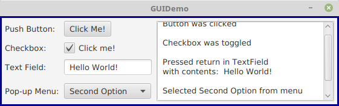
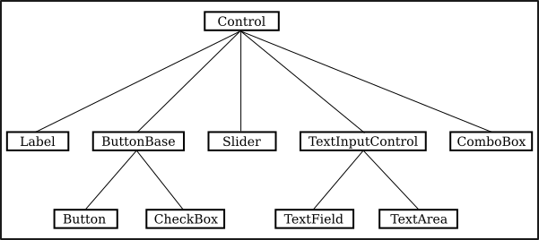

The Modern User Interface
When computers were first introduced, ordinary
people—including most programmers—couldn't get near them. They were
locked up in rooms with white-coated attendants who would take your programs
and data, feed them to the computer, and return the computer's response some
time later. When timesharing—where the computer switches its attention
rapidly from one person to another—was invented in the 1960s, it became
possible for several people to interact directly with the computer at the same
time. On a timesharing system, users sit at "terminals" where they type
commands to the computer, and the computer types back its response. Early
personal computers also used typed commands and responses, except that there
was only one person involved at a time. This type of interaction between a user
and a computer is called a command-line interface.
Today, of course, most people interact with computers in a completely
different way. They use a Graphical User Interface,
or GUI. The computer draws interface components on the
screen. The components include things like windows, scroll bars, menus,
buttons, and icons. Usually, a mouse is used to
manipulate such components or, on "touchscreens," your fingers.
Assuming that you have not just been teleported in
from the 1970s, you are no doubt already familiar with the basics of graphical user
interfaces!
A lot of GUI interface components have become fairly standard. That is, they have similar appearance and behavior on many different computer platforms including MacOS, Windows, and Linux. Java programs, which are supposed to run on many different platforms without modification to the program, can use all the standard GUI components. They might vary a little in appearance from platform to platform, but their functionality should be identical on any computer on which the program runs.
Shown below is an image of a very simple Java program that demonstrates a few standard GUI interface components. When the program is run, a window similar to the picture shown here will open on the computer screen. There are four components in the window with which the user can interact: a button, a checkbox, a text field, and a pop-up menu. These components are labeled. There are a few other components in the window. The labels themselves are components (even though you can't interact with them). The right half of the window is a text area component, which can display multiple lines of text. A scrollbar component appears alongside the text area when the number of lines of text becomes larger than will fit in the text area. And in fact, the whole window can itself be considered to be a "component."

(If you would like to run this program, the source code, GUIDemo.java, is available on line. For more information on using this and other examples from this textbook, see Section 2.6.)
In fact, there are three complete sets of GUI components that can be used with Java. One of these,
the AWT or Abstract Windowing Toolkit, was
part of the original version of Java. The second, which is known as
Swing, builds on the AWT; it was introduced in Java version 1.2,
and was the standard GUI toolkit for many years. The third GUI toolkit,
JavaFX, briefly became a standard part of Java in Version 8 but is now distributed
separately. JavaFX is meant as a more modern
way to write GUI applications, but using it is complicated by the fact that
it has to be downloaded and installed separately.
This textbook covers JavaFX exclusively, but an alternative version of the textbook is available that covers
Swing instead. Either version of the textbook can be a reasonable choice.
When a user interacts with GUI components,
events are generated. For example, clicking a push button generates an event, and pressing
a key on the keyboard generates an event.
Each time an
event is generated, a message is sent to the program telling it that the event
has occurred, and the program responds according to its program. In fact, a typical GUI
program consists largely of "event handlers" that tell the program how to respond
to various types of events. In the above example, the program has been programmed
to respond to each event by displaying a message in the text area.
In a more realistic example, the event handlers would have more to do.
The use of the term "message" here is deliberate. Messages, as you saw in the previous section, are sent to objects. In fact, Java GUI components are implemented as objects. Java includes many predefined classes that represent various types of GUI components. Some of these classes are subclasses of others. Here is a diagram showing just a few of the JavaFX GUI classes and their relationships:

Don't worry about the details for now, but try to get some feel about how object-oriented programming and inheritance are used here. Note that all the GUI classes shown here are subclasses, directly or indirectly, of a class called Control, which represents general properties that are shared by many JavaFX components. In the diagram, two of the direct subclasses of Control themselves have subclasses. The classes TextField and TextArea, which have certain behaviors in common, are grouped together as subclasses of TextInputControl. Similarly Button and CheckBox are subclasses of ButtonBase, which represents properties common to both buttons and checkboxes. (ComboBox, by the way, is the class that represents pop-up menus.)
Just from this brief discussion, perhaps you can see how GUI programming can make effective use of object-oriented design. In fact, GUIs, with their "visible objects," are probably a major factor contributing to the popularity of OOP.
Programming with GUI components and events is one of the most interesting aspects of Java. However, we will spend several chapters on the basics before returning to this topic in Chapter 6.